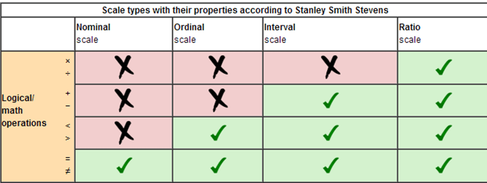
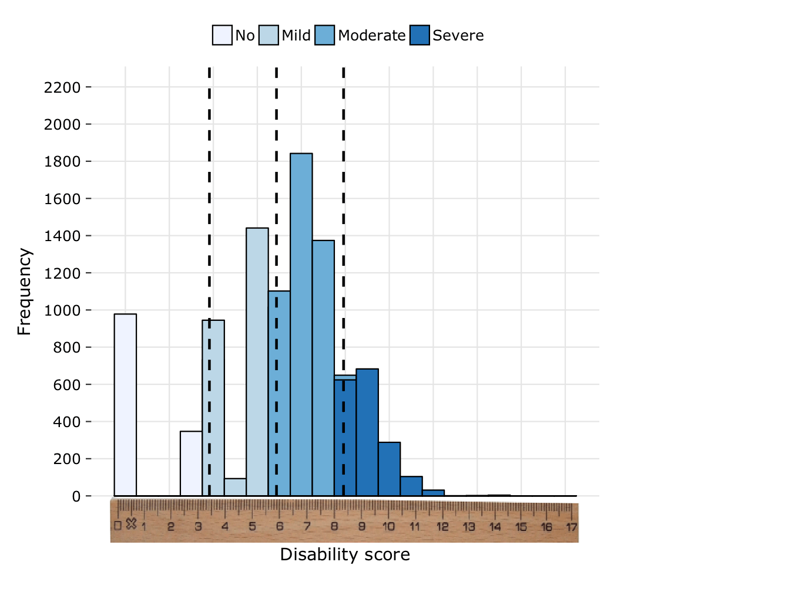
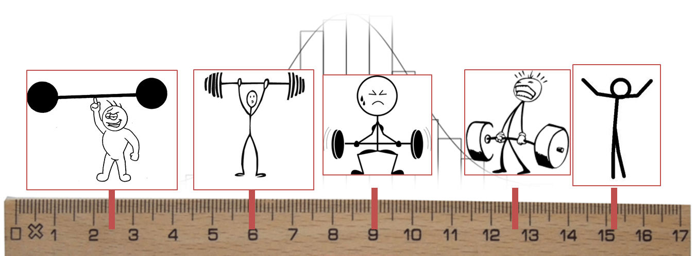
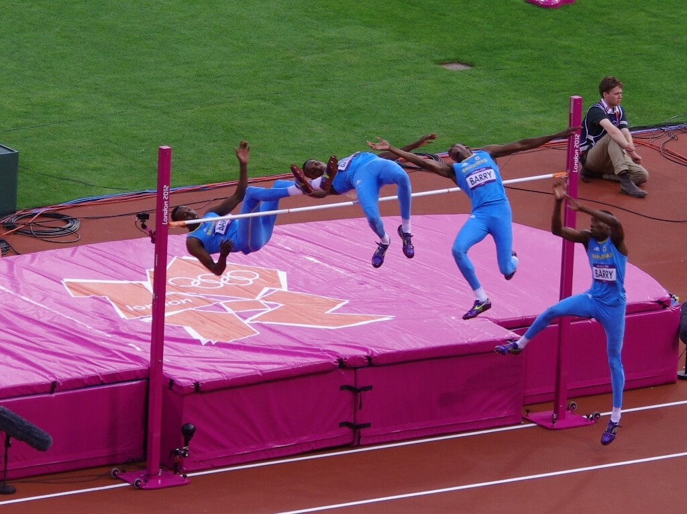

1 - Antecedentes sobre la medición de discapacidad
Source:vignettes/c1_background_ES.Rmd
c1_background_ES.RmdIntroducción
Antecedentes
En 2011, el proyecto de la Encuesta Modelo sobre la Discapacidad (MDS, por sus siglas en inglés) fue iniciado por la OMS y el Banco Mundial (BM) en 2011.
El MDS se basa en la Clasificación Internacional de Funcionamiento, Discapacidad y Salud (ICF, por sus siglas en inglés) y representa una evolución en el concepto de medición de la discapacidad. Explora la discapacidad como la experiencia de una persona con una condición de salud o discapacidad que se encuentra en un entorno facilitador u obstaculizador, en lugar de centrarse únicamente en el estado de salud de la persona.
En consonancia con el marco conceptual de la ICF, la MDS adopta el enfoque de que:
- La discapacidad no es un atributo interno de una persona sino una experiencia;
- La discapacidad es etiológicamente neutral;
- La discapacidad es un continuo, una cantidad y una cuestión de grado, que va desde la no discapacidad a la discapacidad extrema;
- La discapacidad es universal, lo que significa que cada persona se sienta en algún lugar del continuo de la discapacidad.
Por lo tanto, la razón detrás de la MDS requiere una muestra de población general y el uso de no filtros, es decir, no una selección a priori de los encuestados, con tres objetivos principales:
- Lograr tasas de prevalencia de discapacidad comparables y estandarizadas en todos los países;
- Entregar los datos necesarios para diseñar intervenciones, programas y políticas apropiadas para personas con niveles de discapacidad leves, moderados y graves;
- Supervisar la implementación de los Objetivos de Desarrollo Sostenible (ODS) y la Convención de las Naciones Unidas sobre los Derechos de las Personas con Discapacidad (CRPD, por sus siglas en inglés) al permitir una comparación directa entre las personas con niveles de discapacidad leves, moderados y graves, y las personas sin discapacidad.
La MDS adopta el enfoque de que la discapacidad es un fenómeno universal caracterizado por un continuo que varía de niveles de discapacidad bajos a altos. Esta conceptualización requiere que la información sobre la discapacidad se informe y analice utilizando escalas métricas. Esta escala va desde 0 (sin discapacidad) a 100 (discapacidad extrema).
Siguiendo un enfoque similar al del Informe Mundial sobre Discapacidad (WRD, por sus siglas en inglés) y utilizando la moderna teoría de pruebas, las preguntas de funcionamiento del Módulo 4000 se utilizan para construir una escala de discapacidad con propiedades métricas. La muestra de la población general se utiliza para crear esta métrica, que luego se transforma linealmente para ir desde 0 (nivel más bajo de discapacidad) hasta 100 (nivel más alto).
Propósito de esta guía
El Programa de Discapacidad de la OMS ofrece apoyo técnico a los países para guiar la implementación exitosa de la encuesta y analizar los datos resultantes. Esta guía forma parte de este paquete de apoyo técnico.
Para crear la escala de discapacidad, en la que cada individuo tiene
una puntuación de 0 a 100, la OMS utiliza una técnica llamada Análisis
de Rasch. El propósito de esta guía es explicar en detalle cómo se
realiza el Análisis de Rasch y cómo utilizar el paquete de códigos de la
OMS, escrito en el lenguaje de programación estadística R,
para llevar a cabo el Análisis de Rasch para el MDS.
Los objetivos
- Comprender la medición y la información que los diferentes tipos de escalas pueden proporcionar;
- Describir el razonamiento y el proceso detrás del Análisis Rasch;
- Aprender a preparar datos para un modelo de Rasch;
- Aprender a ejecutar un modelo Rasch;
- Aprender a evaluar la calidad del modelo de Rasch;
- Aprender a ajustar los datos para mejorar la calidad de un modelo de Rasch;
- Comprender cómo usar el paquete para calcular estadísticas descriptivas.
¿Qué es la medición?
A primera vista, la medición parece muy directa. Sin embargo, el concepto de “medición” en realidad se compone de unos pocos componentes más pequeños. Es importante entender cada uno de estos componentes al formular una nueva herramienta de medición, como lo estamos haciendo con la Encuesta Modelo sobre Discapacidad.
Las principales ideas de medición son las siguientes:
- Los objetos tienen propiedades que se pueden pensar en términos de más o menos, más grandes o más pequeños, más fuertes o más débiles.
- Esta propiedad puede medirse a través de su manifestación (o comportamiento observable).
- Esta manifestación se puede mapear en una escala.
- Medición puede tener algún error involucrado, y puede no ser perfectamente preciso.
Por ejemplo, una persona (objeto) tiene cierta inteligencia con respecto a las matemáticas (propiedad). La inteligencia matemática de esta persona se puede observar a través de su desempeño en una prueba de matemáticas (manifestación). Su desempeño en el examen de matemáticas recibe una puntuación de 0 a 100 (escala). El puntaje que alguien recibe en un día en particular puede estar influenciado por factores aleatorios como su estado de ánimo o las condiciones de la habitación, por lo que el puntaje puede no reflejar exactamente la verdadera inteligencia de la persona (error).
Así como hay diferentes tipos de propiedades que los objetos pueden tener (por ejemplo: altura, peso, color, inteligencia), también hay diferentes tipos de escalas con las que se pueden medir estas propiedades. Cada uno de estos diferentes tipos de escalas puede proporcionarle diferentes tipos de información, y solo puede realizar ciertos tipos de operaciones matemáticas con cada tipo de escala.
Los cuatro tipos principales de escalas son:
- Escala nominal - Esta escala implica asignar nombres a objetos. Por ejemplo, en una encuesta a menudo identificamos a las personas como “hombres” o “mujeres”. Esto sería considerado una escala nominal. La única operación matemática disponible para esta escala es la evaluación de la igualdad. En otras palabras, con escalas nominales, solo puede determinar si dos objetos son iguales o no lo son.
- Escala ordinal - Esta escala implica colocar objetos en un orden particular. Por ejemplo, en una encuesta a menudo tiene preguntas con las siguientes opciones de respuesta: “No estar para nada de acuerdo”, “No estar de acuerdo”, “Ni de acuerdo ni en desacuerdo”, “De acuerdo” y “Estar totalmente de acuerdo”. Esta sería una escala ordinal. Hay dos operaciones matemáticas posibles con escalas ordinales: igualdad y más/menos. Por ejemplo, con esta escala puede determinar si dos objetos dan respuestas iguales (por ejemplo, dos personas que responden “de acuerdo” a una pregunta en una encuesta) o si la respuesta de una persona es “mayor” que la de otra. Por ejemplo, si la Persona A responde “de acuerdo” y la Persona B responde “estar totalmente de acuerdo”, puede estar seguro de que la Persona B acepta más el elemento que la Persona A. Sin embargo, no puede determinar la “distancia” entre los ítems. En otras palabras, tomando nuestro ejemplo, no sabe cuánto más concuerda la Persona B que la Persona A.
- Escala de intervalo: Esta escala implica colocar objetos en posiciones que tienen un orden significativo y distancia con respecto a otros objetos. Por ejemplo, el clima en dos días puede tener dos temperaturas diferentes. Digamos que el Día 1 tiene una temperatura de 10 grados centígrados y el Día 2 tiene una temperatura de 20 grados centígrados. Este es un ejemplo de una escala de intervalo. Con esta escala, podemos usar tres operaciones matemáticas diferentes: podemos determinar si dos objetos son iguales, si uno es mayor que otro, y también la distancia relativa entre ellos. En nuestro ejemplo, claramente el Día 1 y el Día 2 tienen dos temperaturas diferentes, y el Día 2 es más caluroso que el Día 1. Pero incluso más que eso, podemos decir que el Día 2 es exactamente 10 grados centígrados más caluroso que el Día 1. A diferencia de una escala ordinal, la distancia entre dos puntos en la escala es significativa. Sin embargo, no podemos determinar relaciones entre dos puntos en la escala. En nuestro ejemplo, no podemos decir que el Día 2 fue el doble de caliente que el Día 1. Esto se debe a que 0 grados se colocan arbitrariamente. Cuando hace 0 grados afuera, hace frío, pero todavía hay una temperatura presente.
- Escala de cociente - Esta escala es como una escala de intervalo, excepto que también tiene un punto “0” significativo. Podemos aplicar cuatro operaciones matemáticas diferentes a esta escala: las tres de una escala de intervalo además de la multiplicación/división. Por ejemplo, imagine que la Persona A mide 100 cm de altura y la Persona B mide 150 cm de altura. Claramente podemos determinar que la Persona A no es la misma altura que la Persona B, la Persona A es más baja que la Persona B y la Persona A es 50 cm más baja que la Persona B. Pero incluso más que eso, porque 0 cm es significativo, podemos decir que Persona B es 50% más alto que la Persona A. Podemos crear una proporción entre sus alturas. A diferencia de la temperatura, podemos decir con certeza dónde está 0 cm. Si algo mide 0 cm, ¡entonces no está!
La siguiente tabla ofrece un resumen de qué tipo de información es posible con cada escala.

La mayoría de las preguntas de la MDS están en una escala ordinal de 5 puntos (por ejemplo, 1 = Ninguna, 2 = Algunas, 3 = Moderada, 4 = Mucho, 5 = Completa). Para crear un puntaje que podamos usar y confiar, lo que queremos hacer es tomar nuestros datos ordinales y mapearlos en una escala de intervalos de discapacidad. En otras palabras, al usar la regla de abajo como referencia, queremos pasar de la parte superior de la regla a la parte inferior.

¿Por qué simplemente agregar datos ordinales no es lo suficientemente bueno? Imagine que es el CEO de una empresa que vende jugo de naranja. Le pregunta a sus empleados, ¿cuánto jugo de naranja podremos producir este trimestre? El Empleado A responde que la compañía ha producido 5000 naranjas mientras que el Empleado B responde que la compañía ha producido 1500kg de naranjas. ¿Quién le dio más información sobre la cantidad de jugo de naranja que podrá producir?
El Empleado B le dio información sobre una escala de intervalo (peso), y el Empleado A le dio información sobre una escala ordinal (conteo). El Empleado B le dio más información; Con su respuesta, usted sabe exactamente cuánto jugo de naranja puede vender. El Empleado A le dijo cuántas naranjas tiene, pero no tiene idea de cuán grandes o pequeñas son.

Este escenario es similar a nuestro cuestionario. Podríamos simplemente sumar todas las respuestas a todas las preguntas que nos interesan para calcular una puntuación total. Sin embargo, esa puntuación total no nos dice mucho sobre el nivel general de discapacidad que una persona experimenta, porque no sabemos qué preguntas se identificaron como difíciles y las diferentes preguntas tienen diferentes niveles de dificultad.
Por ejemplo, imagine que una persona está respondiendo preguntas de la Encuesta Modelo sobre la Discapacidad. Esta persona respondió “3 = Algunos problemas” a las dos preguntas: “¿Qué tan problemático ha sido para usted utilizar el servicio sanitario?” y “¿Qué tan problemático ha sido para usted dormir?”. Uno puede imaginar que las dificultades para dormir son bastante comunes, y muchos de nosotros experimentamos problemas con el sueño sin que esto afecte nuestras vidas demasiado. Sin embargo, muchas menos personas tienen “algunos problemas” con el uso del inodoro, y uno puede imaginar que tener incluso un cierto nivel de dificultad para usar el inodoro puede causar problemas significativos en la vida de alguien. Por lo tanto, se puede ver que la respuesta de “3” a “dormir” no es equivalente a la respuesta de “3” a “utilizar el servicio sanitario”.
Así que, en esencia, estamos tratando de pasar de contar las respuestas a las preguntas sobre discapacidad a medir realmente los niveles de discapacidad en una escala de intervalo. Lo haremos usando Análisis Rasch.
¿Cómo se aplica una escala de intervalo para medir la discapacidad?
Antes de comenzar la discusión de la técnica del Análisis de Rasch, es importante enfatizar nuevamente la comprensión de la OMS sobre la discapacidad. Estamos midiendo la discapacidad en una escala de intervalo. Esta escala varía de 0 (sin discapacidad) a 100 (discapacidad extrema), y cada persona de la población se encuentra en algún lugar de la escala.
Esto es muy diferente de la forma tradicional de pensar sobre la discapacidad. A menudo, cuando las personas escuchan la palabra “discapacidad”, piensan en diferentes “tipos de discapacidades”, y las personas que más rápidamente vienen a la mente son, por ejemplo, las personas ciegas, las personas sordas o las que usan sillas de ruedas. Para la OMS, la palabra “discapacidad” no se refiere a los atributos de grupos específicos y limitados de personas que tienen discapacidades particulares. Para la OMS, “discapacidad” se refiere a una experiencia universal, no un atributo de una persona, que es el resultado de una multitud de factores, como una condición de salud subyacente o la accesibilidad de un entorno.
Por ejemplo, piense en una persona que tiene un impedimento de la vista debido a un glaucoma y otra persona que tiene un impedimento de movilidad debido a una lesión de la médula espinal. Ambas personas pueden tener dificultades para usar el sistema de transporte. La persona con una discapacidad visual puede tener dificultades para usar el transporte porque los nombres de las paradas en el autobús no se anuncian por el altavoz, por lo que la persona no puede saber cuándo ha llegado a su destino. La persona con problemas de movilidad puede tener dificultades para usar el sistema de transporte porque los autobuses no tienen rampas que le permitan bajar independientemente con su silla de ruedas. A pesar del hecho de que estas dos personas tienen diferentes tipos de impedimentos y se enfrentan con diferentes tipos de barreras, el nivel de discapacidad que experimentan es bastante similar en este dominio particular del transporte.
La salida del Análisis Rasch nos dará el puntaje de discapacidad para cada persona en la muestra. Luego podemos trazar estos puntajes en un histograma para obtener una imagen general de la distribución de la discapacidad en una población. A continuación se muestra un ejemplo de dicha distribución. Puedes pensar en el eje horizontal como una regla. Cada persona se sienta en algún lugar de esta regla, y las alturas de los barrotes indican cuántas personas se encuentran en esa posición particular en la regla.

¿Por qué debemos usar el Análisis de Rasch?
Propiedades importantes
La razón principal por la que usamos Rasch Analysis ya se ha mencionado: nos permite tomar datos ordinales y mapearlos en una escala de intervalo. Sin embargo, hay otras propiedades importantes del Modelo Rasch que lo convierten en un método particularmente útil para nuestros propósitos:
- No se hacen suposiciones sobre la distribución de las capacidades de personas.
- Las dificultades de dos ítems pueden compararse independientemente de las capacidades de las personas
- Las capacidades de dos personas se pueden comparar independientemente de las dificultades de los ítems
- La diferencia entre las capacidades de las personas y las dificultades de los ítems es una estadística suficiente (consulte un texto estadístico para obtener más información sobre estadísticas suficientes)
Metas
En última instancia, tenemos tres objetivos principales al realizar el Análisis Rasch:
- Obtener estimaciones de las capacidades de la personas
- Conocer la dificultad de los ítems en la escala.
- Crear y validar una herramienta de medición confiable de escala de intervalos
En otras palabras, la Meta 1 nos da los puntajes de discapacidad que estamos buscando. La Meta 2 nos dice qué “difíciles” los ítems son, es decir, qué tan indicativos son los diferentes niveles de discapacidad (leve, moderada, grave).
La Meta 3 tiene que ver con las propiedades psicométricas del instrumento de encuesta que estamos utilizando. Con el Análisis Rasch, además de calcular la escala de intervalo, estamos realizando simultáneamente un análisis de la validez y confiabilidad de la escala. Si nuestros datos se ajustan a la propiedad del modelo, podemos estar seguros de que los puntajes que obtenemos para las personas y para los artículos son válidos (es decir, están midiendo lo que pretendemos medir) y confiables (es decir, el instrumento de la encuesta daría resultados consistentes si la encuesta fue repetida).
Salida
Como ya se mencionó anteriormente, uno de nuestros objetivos es obtener las estimaciones de las capacidades de las personas. Esto significa que una salida del Análisis de Rasch será un continuo de rasgo latente (se muestra a continuación) …

… donde puede localizar personas específicas … 
…y también los ítems!

“Continuo del rasgo latente” es otra frase para describir la escala. “Rasgo latente” se refiere a una característica subyacente de la población que el instrumento de la encuesta está midiendo (en nuestro caso, discapacidad). “Continuo” es simplemente otra palabra para “escala”, enfatizando que las personas pueden ubicarse en cualquier punto entre los puntos finales (0 y 100) de la escala.
La figura anterior ilustra un ejemplo que analiza la fuerza de las personas y la dificultad de cada elemento (preguntas Q1 a Q10) en relación con la fuerza. La persona más fuerte está en el lado izquierdo del continuo, mientras que la persona más débil está en el lado derecho del continuo. Podemos ver que los artículos Q9 y Q10 son los más fáciles; están ubicados en el mismo extremo del continuo que la persona más débil. La probabilidad de que las personas más fuertes en el extremo izquierdo del continuo obtengan las preguntas “correctas” es muy alta. Las preguntas Q1 y Q2 son las más difíciles; solo las personas más fuertes, ubicadas en el mismo extremo del continuo, tienen una probabilidad razonable de que estas preguntas sean “correctas”.
¿Qué es el Análisis de Rasch?
El Análisis de Rasch fue nombrado por el matemático danés Georg Rasch (1901-1980). La idea fundamental del Análisis de Rasch fue resumida por Rasch de la siguiente manera:
… una persona que tenga una capacidad mayor que otra persona debería tener la mayor probabilidad de resolver cualquier elemento del tipo en cuestión y, de manera similar, un elemento es más difícil que otro significa que para cualquier persona la probabilidad de resolver el segundo elemento es el mayor.
Esta cita de Rasch se refiere a dos situaciones:
- Si tenemos dos personas, la Persona A y la Persona B, y la Persona A tiene más discapacidad que la Persona B, entonces la Persona A tiene una mayor probabilidad de calificar cualquier artículo dado en la encuesta, por ejemplo, “caminar 100 m”, como más difícil que la persona B.
- Si tenemos dos ítems, el Ítem A y el Ítem B, y el Ítem A es más difícil que el Ítem B, entonces cualquier persona tendrá una mayor probabilidad de calificar el Ítem A como más difícil que el Ítem B.
Rasch es uno de los modelos más simples en Teoría de la respuesta del artículo (IRT, por sus siglas en inglés). IRT es un enfoque de medición probabilístico: la probabilidad de una respuesta “correcta” a un elemento (es decir, una pregunta) es una función (es decir, una relación) de los parámetros (es decir, las características) de la persona y el elemento.
Bajo el Modelo de Rasch, la probabilidad de cierta respuesta a un elemento de medición está asociada con la capacidad del encuestado (\(\beta_n\)) y la dificultad del ítem (\(\delta_i\)). Usando nuestro ejemplo anterior de una prueba de matemáticas, la capacidad de la persona \(\beta_n\) sería la inteligencia matemática de la persona, y la dificultad del ítem \(\delta_i\) sería la dificultad de cualquier pregunta dada en la prueba.
Hay dos versiones diferentes del modelo: la versión dicotómica (todas las preguntas tienen dos opciones de respuesta, por ejemplo 0 y 1) y la versión politómica (las preguntas tienen más de 2 opciones de respuesta). El modelo politómico, en el que estamos más interesados porque en el MDS la mayoría de las preguntas utiliza una escala de 5 puntos que va desde “1 = sin problemas” a “5 = problemas extremos”, es simplemente una extensión de la versión dicotómica. A continuación damos una descripción básica de los modelos.
El Modelo Rasch - Dicotómico
A continuación se muestra la principal ecuación para el Modelo de Rasch dicotómico (dos opciones de respuesta):
\[P(X_{ni}=1) = \frac{e^{\beta_n-\delta_i}}{1+e^{\beta_n-\delta_i}}\]
en la que:
- \(i\) - contador de ítems
- \(n\) - contador de personas
- \(X_{ni}\) - variable aleatoria del puntaje de la persona \(n\) en ítem \(i\)
- \(\beta_n\) - la ubicación de la persona \(n\) en el continuo latente
- \(\delta_i\) - la dificultad de ítem \(i\) en el continuo latente
En palabras más simples, esto significa: la probabilidad de que esa persona \(n\) responde a la pregunta \(i\) correctamente es una proporción basada en la diferencia entre la capacidad de esa persona (\(\beta_n\)) y la dificultad de esa artículo (\(\delta_i\)).
Esto se puede ver en la siguiente figura. El eje vertical es la probabilidad de que la persona responda a una pregunta correctamente (\(P(X_{ni}=1)\)), con un rango de 0 a 1. El eje horizontal es la diferencia entre la capacidad de una persona y la dificultad del ítem (\(\beta_n-\delta_i\)). Digamos que esta pregunta tiene dos opciones: 0 y 1, y una respuesta “correcta” al elemento es la opción de respuesta de 1. Cuando la capacidad de la persona y la dificultad del elemento son iguales (\(\beta_n-\ delta_i=0\) o \(\beta_n=\delta_i\)), entonces la probabilidad de que la persona responda correctamente a la pregunta es del 50%. Si la capacidad de la persona es mayor que la dificultad del elemento (\(\beta_n>\delta_i\)), entonces la probabilidad de que la persona responda correctamente a la pregunta es superior al 50%. Si la capacidad de la persona es menor que la dificultad del ítem (\(\beta_n<\delta_i\)), entonces la probabilidad de que la persona responda correctamente a la pregunta es menor al 50%.
El Modelo Rasch - Politómico
El modelo de Rasch politómico (más de 2 opciones de respuesta) es una extensión de la versión dicotómica. También es conocido como el Modelo de crédito parcial. La principal ecuación para este modelo es:
\[P(X_{ni}=x) = \frac{e^{\sum^x_{k=0}(\beta_n-\tau_{ki})}}{\sum^{m_i}_{j=0}e^{\sum^j_{k=0}(\beta_n-\tau_{ki})}}\] en la que:
- \(i\) - contador de ítems
- \(n\) - contador de personas
- \(X_{ni}\) - variable aleatoria de el puntaje de la persona \(n\) en ítem \(i\)
- \(\beta_n\) - la ubicación de la persona \(n\) en el continuo latente
- \(\tau_{ki}\) - \(k^{th}\) el umbral de ítem \(i\) en el continuo latente
- \(m_i\) - el puntaje máximo del ítem \(i\)
En palabras más simples, la probabilidad de que esa persona \(n\) dé la respuesta \(x\) a la pregunta \(i\) es una proporción basada en la diferencia entre la capacidad de esa persona (\(\beta_n\)) y la dificultad de cada opción de respuesta (\(\tau_{ki}\)) para ese ítem.
Esto se puede ver en la siguiente figura, que es similar a la figura para el modelo dicotómico. El eje vertical es la probabilidad condicional de que la persona logre elegir una opción de respuesta particular o superior (\(P(X_{ni}>x)\)), que va de 0 a 1. El eje horizontal es la diferencia entre la capacidad de una persona y la dificultad del ítem. La diferencia clave entre esta figura y la figura para el modelo dicotómico es que ahora tenemos una curva de probabilidad para cada umbral.
Un umbral es el punto entre dos opciones de respuesta adyacentes donde una persona tiene un 50% de probabilidad de dar una opción de respuesta u otra. La siguiente figura muestra el caso de cuatro opciones de respuesta, lo que significa que esta pregunta tiene tres umbrales (el 50% del punto entre las opciones de respuesta 1 y 2, el mismo punto entre las opciones 2 y 3, y el mismo punto entre las opciones 3 y 4).
En la siguiente figura, puede ver que la probabilidad de pasar el primer umbral (curva roja), es decir, obtener una puntuación de 2, es siempre mayor que la probabilidad de pasar el segundo (verde) o el tercer (azul) umbral. Esto muestra una propiedad clave del Modelo de Rasch politómico: los umbrales están ordenados.
¿Cómo se hace el Análisis de Rasch?
El resumen del método
Todo lo que hemos descrito hasta ahora es un trasfondo de la lógica del Análisis de Rasch. Sin embargo, en este punto aún no hemos descrito cómo se lo hace realmente.
En general, la técnica básica es ajustar nuestros datos al Modelo Rasch, tomando nota de lo bien que se ajusta a las suposiciones del Modelo Rasch. Esto difiere de otros tipos de modelado en los que se adapta un modelo a sus datos. El modelo de Rasch se ve como el “ideal”, y queremos ajustar nuestros datos de manera que puedan ajustarse a este ideal. Si nuestros datos se ajustan razonablemente a este ideal, podemos estar seguros de que tenemos una escala de intervalo válida y confiable.
El análisis de Rasch es un proceso iterativo, lo que significa que debe realizarse varias veces para alcanzar un resultado. El proceso se muestra en la siguiente figura.

La siguiente pregunta, naturalmente, es: ¿cuáles son los suposiciones de Rasch que estamos probando?
Las suposiciones de Rasch
Los suposiciones del Modelo Rasch son los siguientes. Cada suposición será discutido en detalle en las siguientes secciones:
- Independencia de ítems
- Unidimensionalidad
- Ordenamiento estocástico
- Invariación de grupo
- Ajuste al modelo
También analizaremos a continuación cómo ajustar los datos para que se ajusten mejor a cada supuesto. Es posible que estas técnicas no tengan mucho sentido ahora, pero se aclararán una vez que analicemos el ejemplo.
Independencia de ítems
Independencia de los ítems se refiere a la incorrelación entre los ítems. En otras palabras, queremos que las respuestas a un ítem NO se relacionen fuertemente con las respuestas de otro ítem. La correlación ocurre cuando los ítems están vinculados por atributos, contenido, estructuras o temas comunes. Por ejemplo, en el MDS dos ítems que a menudo están relacionados son “¿Qué tan problemático ha sido para usted sentir tristeza, desánimo o depresión?” y “¿Qué tan problemático ha sido para usted sentir preocupación, nerviosismo o ansiedad?”
Para solucionar problemas con alta correlación, a menudo agregamos ítems dependientes en un “súper ítem” o “testlet”. Por ejemplo, si tenemos dos ítems, cada uno con 5 opciones de respuesta, que están altamente correlacionados, podríamos combinarlos en un testlet sumando las respuestas para cada persona. Este testlet ahora tendría 9 opciones de respuesta.
Unidimensionalidad
La unidimensionalidad se refiere a la situación en la que todos los ítems miden la misma construcción única subyacente. En el caso de la MDS, queremos que todos los ítems midan la misma construcción subyacente de “discapacidad”. Una puntuación total solo es significativa con una escala unidimensional.
Toma otro ejemplo en la situación educativo: imagine una prueba de matemáticas. Todos los ítems de esta prueba miden la misma construcción subyacente, es decir, la capacidad de la persona en matemáticas. Si una prueba de matemáticas también contuviera preguntas de literatura en inglés, la escala creada con todos los ítems de esta prueba ya no sería unidimensional porque la prueba se compone de dos conjuntos de ítems totalmente separados.
Si notamos problemas con la dimensionalidad de nuestros datos, podemos corregirlo dividiendo los ítems en múltiples escalas. En nuestro ejemplo educativo anterior, esto significaría crear una escala separada para las preguntas de matemáticas en la prueba y una escala separada para las preguntas de inglés.
Ordenamiento estocástico
El ordenamiento estocástico se refiere a los umbrales (es decir, los límites entre las opciones de respuesta) que están en el orden correcto. Esperamos que la probabilidad de que una persona cruce el primer umbral sea mayor que la probabilidad de que pase el segundo, y de igual manera la probabilidad de cruzar el segundo umbral debe ser mayor que la probabilidad de cruzar el tercero, etc. Como analogía, piense en un salto de altura: si alguien puede saltar más de 1.5 m, entonces necesariamente ya saltó más de 1 m. El ordenamiento estocástico solo es relevante para los artículos con más de 2 opciones de respuesta (caso politómico).

Si tenemos problemas con el ordenamiento estocástico, podemos recodificar las opciones de respuesta para crear menos umbrales entre los ítems que es más probable que estén en orden.
Invariancia de grupo
La invariancia de grupo se refiere a ítems que se comportan de manera similar para personas con diferentes características. Por ejemplo, queremos que hombres y mujeres muestren patrones similares de respuestas para un ítem. Si los elementos muestran un comportamiento diferente para diferentes grupos, esto se conoce como “funcionamiento diferencial de ítems (DIF, por sus siglas en inglés)”.
Para la MDS, debido a que esperamos que los hombres y las mujeres experimenten diferentes niveles de discapacidad, no estamos demasiado preocupados por la invarianza del grupo. Esto es lo mismo para personas de diferentes edades, ya que a medida que envejecemos, mayor es la probabilidad de experimentar una discapacidad en la vida diaria.
Si queremos corregir el DIF, podemos dividir los elementos en subgrupos. Por ejemplo, en lugar de tener una pregunta Q1 para toda la muestra, podemos dividirla en dos preguntas Q1_Men y Q1_Women.
Ajuste al modelo
Además de todas las suposiciones anteriores, también nos preocupamos por el ajuste al modelo. El ajuste de los ítems, las personas y el modelo en general se miden con diversas estadísticas de ajuste.
Nosotros determinamos:
- ¿Los ítems se ajustan al modelo? -> examinar el ajuste de ítems
- ¿Las personas se ajustan al modelo? -> examinar el ajuste de personas
- ¿Cómo es el modelo en general? -> examinar los puntajes de confiabilidad, como el índice de separación de personas (PSI, por sus siglas en inglés)
Si los ítems o las personas se muestran mal ajustados al modelo después de realizar todos los demás ajustes que podríamos hacer, todo lo que queda por hacer es eliminar ítems o personas de la escala. Esto se consideraría un último recurso, ya que significa que la escala que termina creando no examina todos los ítems o personas que originalmente se propuso medir.
¿Por qué tengo que ejecutar el modelo varias veces?
Es muy raro que el primer modelo que ejecute dé resultados perfectos donde todo se ajusta. Si su objetivo es simplemente evaluar la validez y confiabilidad de su cuestionario con los datos sin procesar, entonces podría ejecutar el modelo una vez y analizar esos resultados. Sin embargo, si su objetivo es obtener una puntuación válida y confiable, como ocurre en el caso del MDS, lo más frecuente es que sea necesario ejecutar el modelo varias veces, haciendo ajustes a los datos cada vez. Estamos tratando de encontrar una manera de ajustar los datos al “ideal” de Rasch, en otras palabras, para crear una puntuación que se adhiera a estas suposiciones básicas incorporadas en el modelo de Rasch. El hecho de que deba ejecutar el modelo varias veces no significa necesariamente que haya algún problema con su cuestionario. El proceso de Análisis de Rasch simplemente le indica la mejor manera de utilizar el instrumento de encuesta que tiene para crear la puntuación más confiable.
¿Dónde empiezo?
La siguiente figura muestra la ruta de reparación para el modelo de Rasch. En general, puede ver que todas estas suposiciones pueden afectar el desempeño de otras suposiciones. Sin embargo, se puede determinar una guía general sobre qué orden usar cuando se ajustan los datos.

La dependencia local (o independencia del ítem) afecta la unidimensionalidad, el ordenamiento de umbrales (o el ordenamiento estocástico) y el ajuste al modelo, por lo que es bueno comenzar por cuidar en primer lugar la independencia del ítem La unidimensionalidad afecta el ordenamiento de umbrales y el ajuste al modelo, por lo que es una buena suposición cuidar en segundo lugar. El ordenamiento de umbrales afecta el ajuste al modelo, por lo que puede ser atendido en tercer lugar. Finalmente, la invariancia de grupo solo afecta el ajuste al modelo, por lo que puede ser atendido en último lugar.
¿Cómo puedo saber cuándo he terminado?
Determinar cuándo puede dejar de ejecutar iteraciones del Modelo Rasch no es totalmente sencillo. Aprenderemos reglas generales, pero se necesita práctica para tener una idea de lo que es “suficientemente bueno”. El resto de esta guía le mostrará lo que debe examinar para determinar cuándo sus datos se ajustan al modelo lo suficientemente bien.